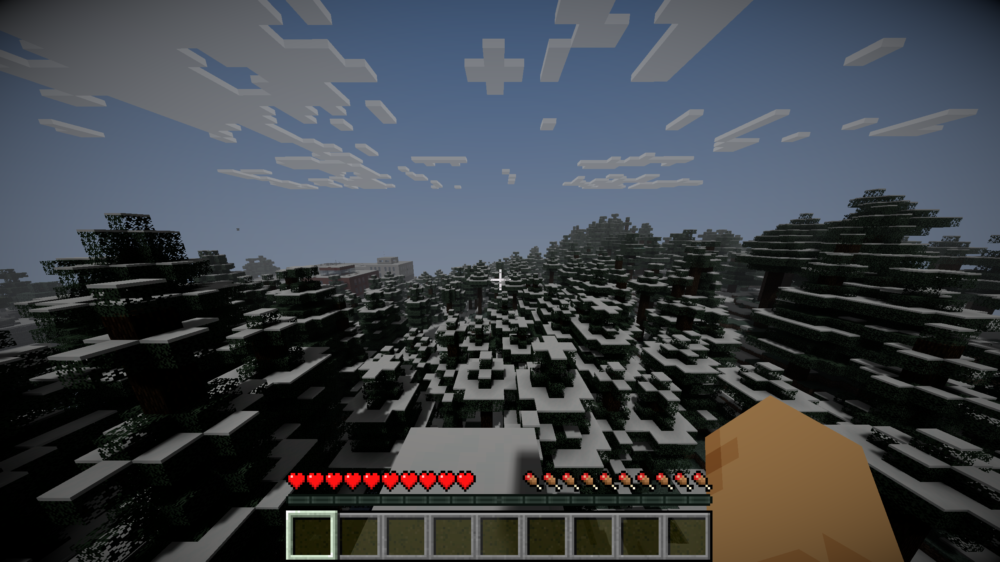

Там кто-то
жил.
Улицы и здания процедурного города. Обыскать их — значит рискнуть.
MINECRAFT FORGE 1.20.1 / ХОРРОР-ВЫЖИВАНИЕ
Города опустели. Природа забирает своё. После заката каждый шаг требует осторожности.
В первый раз скачай ZIP и запусти установщик вручную. Кнопка запуска работает после установки, если ты разрешил обработчик ссылок.
Концепт-арт проекта · не скриншот из игры
КРАСИВОЕ МЕСТО, ЧТОБЫ ПРОПАСТЬ
Высокие горы, реки, озёра и биомы с собственным характером. Среди них — улицы и здания процедурных заброшенных городов.
Это процедурный мир с атмосферой постапокалипсиса. Реальные Москва и Америка в масштабе 1:1 здесь пока не воссозданы.
Улицы и здания процедурного города. Обыскать их — значит рискнуть.
Горы, леса и водоёмы. Красота не делает путь безопасным.

КАЖДЫЙ ВЫХОД — РЕШЕНИЕ
В сборке Forge 1.20.1 есть хоррор-мобы, оружие, моды на бедствия и технику. Их работа вместе в многопользовательской игре ещё проверяется.
Шейдер и туман создают атмосферу. Полная тьма и работа фонаря с шейдером ещё проверяются.
Мод усиления орд по игровым дням установлен; его поведение и конкретные бедствия ещё проверяются.
Оружейные моды включены в сборку. Баланс и работа оружия против существ ещё проверяются.
Моды на самолёты и вертолёты включены в сборку. Полёты в многопользовательской игре ещё проверяются.
Сборка предлагает лёгкий профиль. Дальность прорисовки может подстраиваться под частоту кадров; шейдеры остаются необязательными для слабых компьютеров.
ТВОЯ ИСТОРИЯ НАЧИНАЕТСЯ ЗДЕСЬ
Для модового мира всем игрокам нужна одинаковая сборка. Сначала установи её вручную; затем кнопка «Играть — открыть TLauncher» сможет использовать обработчик ссылок, если ты разрешил его регистрацию.
Нажми «Установить сборку», скачай ZIP, распакуй и запусти Install-Client.cmd. Подтверди запуск в Windows. Регистрацию обработчика posle:// разреши только по своему выбору. Сайт не запускает установщик автоматически.
После установки кнопка «Играть — открыть TLauncher» обращается к обработчику posle://play. Браузер может попросить подтвердить открытие подписанного TLauncher. Проверь папку игры и выбери Forge 1.20.1-47.4.10 без OptiFine.
Нажми Play в TLauncher, затем открой «Сетевая игра» в Minecraft и добавь адрес ниже. Вход на сервер остаётся ручным. Для регистрации попроси личный код доступа у владельца сервера.